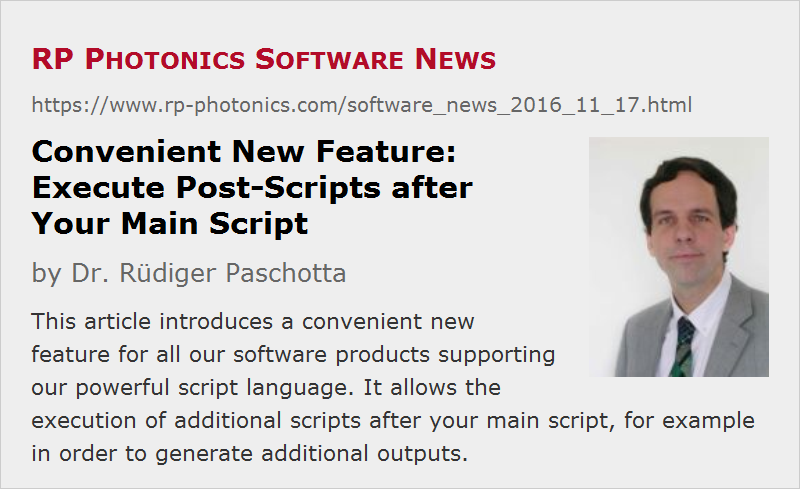

Convenient New Feature: Execute Post-Scripts after Your Main Script
Posted on 2016-11-17 in the RP Photonics Software News (available as e-mail newsletter!)
Permanent link: https://www.rp-photonics.com/software_news_2016_11_17.html
Author: Dr. Rüdiger Paschotta, RP Photonics Consulting GmbH
Abstract: This article introduces a convenient new feature for all our software products supporting our powerful script language. It allows the execution of additional scripts after your main script, for example in order to generate additional outputs.

I have recently implemented a nice new feature for all our software products supporting our powerful script language: RP Fiber Power, RP Coating, RP ProPulse and RP Resonator. Let me first discuss the problem which it solves:
The Problem
A script normally triggers some calculations and produces various outputs, e.g. in the form of graphical diagrams or files. It easily happens that something goes wrong with the generation of outputs, which you notice only after execution – for example:
- You have forgotten to display certain outputs or to make a certain diagram.
- You made the required diagram, but the axis scaling turns out to be inappropriate, so that a curve is off the scale.
- You have interrupted the creation of a time-consuming diagram, but then realize that you need another diagram which would have been made later on.
- You would also like to have some calculated data written to a file.
Well, the usual approach is that you amend or correct your script and simply execute it again. All the calculations will then be done again, and all outputs will be generated. There is no problem with that approach if the calculations take only up to a few seconds – as it is in most cases. In some cases, however, some sophistic calculations require several minutes or even more than one hour, and you would really prefer not to redo them only in order to have some outputs amended or corrected.
The Solution
The described problem can now be solved with the new feature. Just save only that added or corrected part of the code which should be executed again (e.g., the code for making a diagram) as a separate script – let us call it a “post-script”. As the first line of that script (important!), write “keep all”. When you then execute that post-script, the software will not – as it would usually do – first delete all variables, arrays, user-defined functions and physics results (e.g. from numerical beam propagation), but keep all that in memory.
It is also possible to keep only the variables and the physics results, for example, by using “keep variables, results” instead of “keep all”.
Other Applications
You may use the new feature also for other purposes. For example, it might be useful for debugging. After the script execution, you may wonder what the values of certain variables are; then just create a simple post-script which outputs their values. A small example:
keep all show "P_s_out: ", P_s_out:d3:"W"
You could also dump all variables values to the log area:
keep all dump variables
You may also consider to use “keep all” in your main script, where you then suppress the time-consuming calculations when it is determined that this is not required, because the results are already there. With that approach, however, one should be rather careful, since it may be difficult to debug those scripts where the output depends not only on the script itself but on previous executions of the same script or a modified version of it.
I imagine that some of our users will find more applications, which I did not anticipate; I would then be glad to learn about that! Also, suggestions for further improvements are always welcome. By the way, the current improvement was also triggered by a user missing that feature.
How to Get It
If you have a license for our software already, you can get a free update which contains the new feature. Just tell us, and you will get it shortly – even if your version is rather old.
This article is a posting of the RP Photonics Software News, authored by Dr. Rüdiger Paschotta. You may link to this page, because its location is permanent.
Note that you can also receive the articles in the form of a newsletter or with an RSS feed.
|  |
If you like this article, share it with your friends and colleagues, e.g. via social media:
These sharing buttons are implemented in a privacy-friendly way!